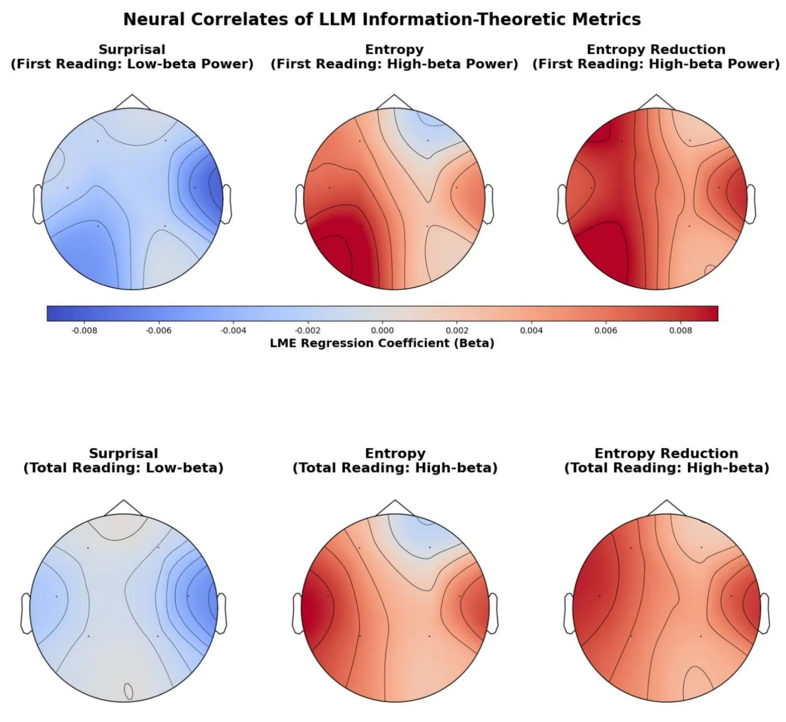
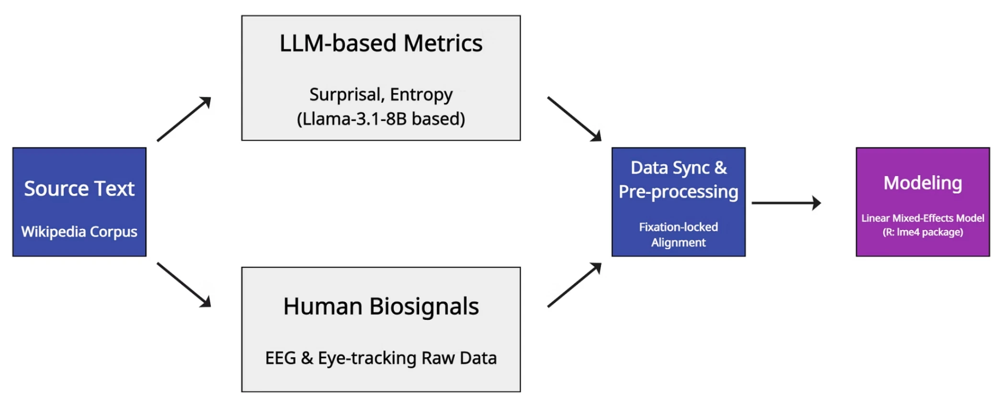
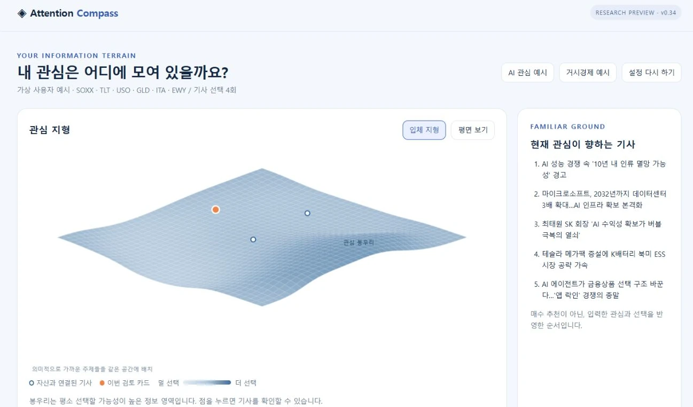
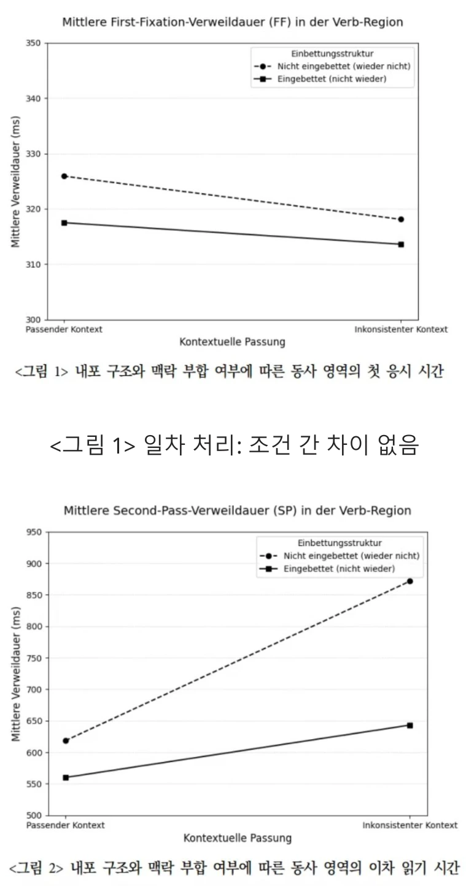
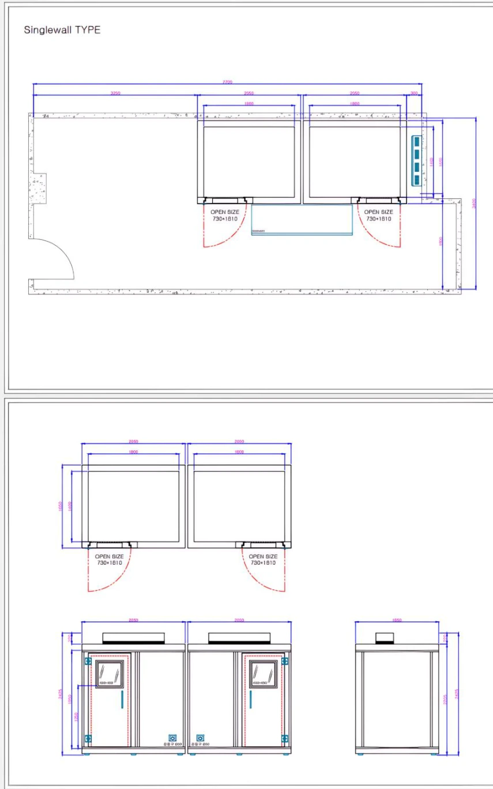

Attention
MPNet 768D 임베딩에 명시적 관심과 기사 쌍 선택을 반영합니다. 보유자산 정보는 관심 모형에 입력하지 않습니다.
상대적 선택 성향 → OmissionAI SERVICE PLANNING · FINANCIAL DATA · COGNITIVE SCIENCE
김건 / Geon Kim
눈에 보이지 않는 인지적 부하를 LLM과 생체신호로 측정했습니다. 이제 그 연구방법론을 금융정보의 해석과 관심의 사각지대를 찾는 서비스로 확장합니다.

LLM × EEG / Eye-tracking
대규모 언어 모델 기반 정보 이론적 복잡도 지표와 언어 처리의 신경 상관성
『언어』 50(2), 573–595
언어를 읽을 때 느끼는 예측 오차와 불확실성을 LLM으로 수치화하면, 실제 인간의 신경반응을 얼마나 설명할 수 있을까?
FROM CONCEPT TO MEASUREMENT

Fixation-locked analysis로 시선 데이터와 EEG를 정밀 동기화하고, 선형혼합효과모형(Linear Mixed-Effects Model)으로 피험자와 데이터의 변이를 통제했습니다.
KEY FINDINGS
LLM 파생 지표의 인지적 해석 가능성을 확인했습니다. 아래 결과는 지표와 EEG power의 연관성에 대한 해석입니다.
Surprisal 증가와 lower-beta power 감소가 연관되었습니다.
Entropy 증가와 좌반구 중심의 광대역 power 증가가 연관되었습니다.
Entropy Reduction 증가와 좌반구 중심의 high-beta 및 gamma power 증가가 연관되었습니다.
첫 화면의 두피 지도는 초기·후기 주시 단계의 저·고베타 대역을 보여줍니다. Gamma 결과는 전공소개서 본문에 기술되어 있으며, 해당 그림에 표시된 대역과 구분했습니다.
인지 개념의 조작화, 이질적인 데이터의 통합, 검증 가능한 질문의 설계. 이 경험은 금융뉴스의 정보량을 분석하고, 사용자가 놓치기 쉬운 정보를 선별하는 제품 가설의 기반이 되었습니다.
ATTENTION COMPASS
개인화가 익숙한 관심과 신념을 반복적으로 강화하면 정보환경은 좁아질 수 있습니다. 제한된 주의를 연구한 경험에서 출발해, 보유자산과 관련되지만 평소 잘 보지 않는 정보를 찾는 의사결정 보조 서비스를 설계했습니다.
좋아할 정보를 더 정확히 추천
기존 관심에 대한 적합성놓치기 쉬운 자산 관련 정보를 탐색
관심의 사각지대와 근거 있는 연결성
DESIGN THROUGH FAILURE
뉴스를 사건 단위로 구조화하려는 과정에서, 명칭을 찾는 일과 관계를 올바르게 해석하는 일이 다르다는 한계를 확인했습니다. 코드와 실패 기록에 남은 오류를 기준으로 구조를 조정했습니다.
사건의 관계를 세밀하게 표현하려 했지만, 관계 추출의 신뢰성이 핵심 과제로 남았습니다.
기업 전체 매출을 반도체 부문 변화로 해석하거나, Apple의 제품 발표를 Samsung에 귀속하는 오류가 기록되었습니다.
공식 자산 노출 자료와 기사 문장 근거를 별도로 확인합니다. 불확실한 연결은 보수적으로 거절하고, 추가 모델은 기존 양성 판정을 거절하는 보조장치로 제한했습니다.
CURRENT DESIGN · SOURCE-VERIFIED v0.34
MPNet 768D 임베딩에 명시적 관심과 기사 쌍 선택을 반영합니다. 보유자산 정보는 관심 모형에 입력하지 않습니다.
상대적 선택 성향 → Omission공식 ETF 구성종목·추종대상과 기사 문장을 연결하고, 명칭·행위 근거와 NLI 판정을 확인합니다. 부인·전망·주체 혼동에는 거절 규칙을 적용합니다.
공식 자산 근거 + 기사 문장 근거중요도와 이전 보도와의 중복 여부를 별도로 평가합니다. 관심 밖·연결성·정보가치 조건을 통과한 기사를 최대 세 개 제시합니다.
0–3개 검토 후보 · 근거 함께 제시MY ROLE
생성형 AI 개발도구를 활용했습니다. 문제 정의와 제품 가설 설정, 검증 기준 수립, 프로토타입 반복, 오류 사례 검토와 실패 원인 분석을 바탕으로 아키텍처와 서비스 방향을 선택했습니다.
현재 확인한 버전은 고정 뉴스 스냅샷을 재생하는 로컬 연구용 PoC입니다. 범용 금융 관계 판정의 정확도는 확보하지 못했으며, 보수적인 거절은 유효한 연결까지 놓칠 수 있습니다.
실제 사용자 효용, 인지 편향 교정, 투자성과는 검증하지 않았습니다. 개발 중 관찰한 사례와 수정 결과를 독립 평가 성능으로 제시하지 않습니다.
인지과학에서 사용한 정보이론적 접근을 영문 금융뉴스와 시장 데이터로 확장했습니다. 뉴스의 맥락적 의외성과 동시점 시장 반응의 연관성을 분석했습니다.
INDEPENDENT RESEARCH
대규모 헤드라인을 정규화하고 중복을 제거해 분석 패널을 구축했습니다.
Qwen 기반 contextual surprisal과 FinBERT 감성 점수를 결합했습니다.
VIX, SPY 수익률, 비정상 거래대금을 연결해 시장 재가격화와의 관계를 분석했습니다.
동시점 연관성에 관한 연구입니다. 이 포트폴리오에서는 수익률 예측력이나 투자 전략의 성과로 해석하지 않습니다.
『독어학』 51, 25–49
독일어 L2 학습자 24명을 대상으로 전제 맥락 지지 여부 × 부정어 내포 여부의 2×2 요인설계를 적용했습니다.
초기·후기 처리를 구분한 결과, 후기 단계에서 맥락 불일치 조건의 재읽기 시간이 증가했습니다. L2 화자의 전제·맥락 통합이 지연될 수 있음을 제시했습니다.
ERP와 GPT 기반 Surprisal을 결합했습니다. 문자적 조건과 전형적 은유 조건의 Surprisal 차이가 나타나지 않아 직접 접근 모형을 지지하는 보조 근거를 제시했습니다.

한양대학교 독어독문학과 연구실 · 2022.09–2025.06
연구보조원(2022.09–2023.09), 랩매니저(2023.09–2025.06)로 EEG·시선추적 통합 실험실의 설비 공사와 장비 구축, 운영을 담당했습니다.
실험 인프라 → 표준 절차 → 데이터 운영

KOREAN RE · PROCESS IMPROVEMENT
코리안리재보험 재물보험팀 · 업무보조(파견계약직)
2025.12–2026.03
재물보험 계약 약 440건의 복수 목적물 소재지 주소를 정리하고 Excel에 입력했습니다. 공공 주소 API 연동 매크로를 개선해 영문주소 검색·복사 단계를 제거했습니다.
약 50%관련 업무의 예상 처리시간 단축
한양대학교에서 독어학, 심리언어학·신경언어학을 공부했습니다. 인간의 정보처리 과정을 설명하는 연구에서 출발해, 금융정보를 검토하는 방식과 AI 서비스의 판단 근거를 설계하고 있습니다.
GitHub · geon-geon연락은 지원서에 기재한 연락처를 이용해 주세요.
한양대학교 대학원 독어독문학과 석사
2023.09–2026.02 · 독어학 전공
심리언어학 / 신경언어학
한양대학교 독어독문학과 학사
2018.03–2023.08 · 영어영문학 부전공
Python · R · SQL
통계모델링 · 데이터 분석 · NLP / LLM 분석
EEG 신호 분석 · Eye-tracking 분석
투자자산운용사 · ADsP · SQLD
AWS Certified AI Practitioner